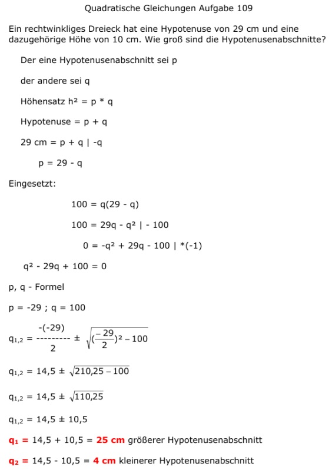

Aufgabe 109 Ein rechtwinkliges Dreieck hat eine Hypotenuse von 29 cm und eine dazugehörige Höhe von 10 cm. Wie groß sind die Hypotenusenabschnitte? Der eine Hypotenusenabschnitt sei p der andere sei q Höhensatz h2 = p * q Hypotenuse = p + q 29 cm = p + q | -q p = 29 - q Eingesetzt: 100 = q(29 - q) 100 = 29q - q2 | - 100 0 = -q2 + 29q - 100 | *(-1) q2 - 29q + 100 = 0 p, q - Formel p = -29 ; q = 100  q1,2 = 14,5 ± 10,5 q1 = 14,5 + 10,5 = 25 cm größerer Hypotenusenabschnitt q2 = 14,5 - 10,5 = 4 cm kleinerer Hypotenusenabschnitt